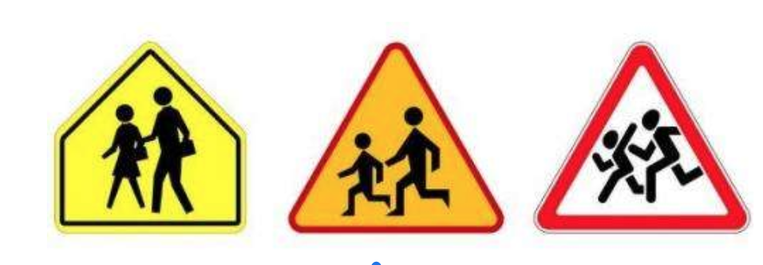
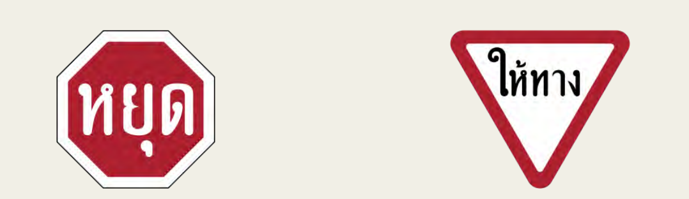

Входячи в цей проєкт, окрім власного водійського досвіду (який був далеко не у всіх) і знань ПДР, ми майже нічого не розуміли про організацію дорожнього руху і системи маршрутного орієнтування на дорогах. До того як щось рекомендувати, проєктувати, змінювати і вирішувати проблеми, ми вирішили зануритись у тему через дослідження.
Ми зафіксували дві задачі:
Командним брейнштормом ми сформулювали первинні дослідницькі запитання, які розділили на 9 блоків.
Первинний пошук відповідей на них дозволив сформулювати прицільніші запитання та побудувати структуровану дослідницьку стратегію. Усі знання, які ми хочемо отримати, ми розділили на три блоки.
Регуляторні документи, результати досліджень, міжнародний досвід вирішення схожих задач та українські напрацювання ми вивчали через аналіз релевантних документів. Основним методом для вивчення проблематики українських доріг стало глибинне інтерв’ю — з водіями та іншими учасниками і учасницями дорожнього руху, проєктувальниками, представниками та представницями Укравтодору, обласних Служб автомобільних доріг, ДерждорНДІ.
Знайомі слова, написані Title case (перша літера прописна, інші рядкові) на дорожніх знаках, читаються з відстані більшої на 10%, ніж ці ж слова, але набрані UPPER CASE (всі прописні).
Київ
Title case
КИЇВ
Upper case
Mixed upper and lower case is preferable where drivers might take advantage of shape recognition, as on a destination sign. Mixed case may reduce the reading time required for long message signs.
Urban Guide Signs Guidelines: Literature Review
State of Israel Ministry of Transport Department of Land Transport
4,8 м/см — це оптимальний індекс розбірливості тексту (співвідношення відстані, з якої читається знак, до висоти літер) для проєктування знаків.
The Province of Ontario, based on a review of the research, has adopted a legibility index standard of 4.8 m./cm., which corresponds to a design driver with an acuity of 20/29. This value represents a compromise between the old standard of 6 m./cm., and the performance of older drivers at night which can be as low as 1.8 m./cm.
Urban Guide Signs Guidelines: Literature Review
State of Israel Ministry of Transport Department of Land Transport
В середньому, водії вперше зчитують знак на половині від тієї відстані, на якій вони можуть розрізнити літери на знаці.
Urban Guide Signs Guidelines: Literature Review
State of Israel Ministry of Transport Department of Land Transport
Водії помічають та реагують на дорожні знаки із динамічними піктрограмами на 50 мілісекунд швидше, аніж на знаки зі статичними піктограмами.
Збільшення динаміки піктограм на знаках (зліва направо)
A sign that evokes more perceived movement increases the observer’s perception of risk, which in turn brings about earlier attention and earlier stopping.
Want to get drivers' attention? Use road signs showing more action
Brigham Young University, Science Daily
Додаткові написи на загальновживаних знаках на мові, що не зрозуміла водіям, знижують зрозумілість знаків для цих водіїв.
Загальновживані знаки, що стали менш зрозумілими через додаткові написи.
A sign that evokes more perceived movement increases the observer’s perception of risk, which in turn brings about earlier attention and earlier stopping.
International Road Sign Comprehension Evaluation Project
UNECE Expert Group
Три назви напрямків — це оптимальна кількість на навігаційному знаку.
Smiley et al found that for 3-name signs, drivers were 99% correct in determining whether their target destination was present or not, 94% correct on direction and 85% correct on distance. These values fell significantly for the 4-and 5-name combinations. In particular 1 in 12 drivers had the wrong direction for the 4- or 5-names signs. On the basis of these results, the authors recommended a limit of 3 names per sign.
Urban Guide Signs Guidelines: Literature Review
State of Israel Ministry of Transport Department of Land Transport
Водіями найкраще читаються шевронні стрілки із кутом в 70˚, гарну читабельність також має така стрілка із кутом 90˚.
Work done in Australia (Hills et al., 1972) testing about a number of different arrow designs has indicated that 70-degree chevron arrows are preferable to others, for legibility distance, while a similar design at 90 degrees and the gerber arrow were also very legible.
Urban Guide Signs Guidelines: Literature Review
State of Israel Ministry of Transport Department of Land Transport
Балансоутримувачі доріг не мають окремого бюджету на утримання дорожніх знаків. Більшість коштів на утримання доріг йде на ліквідацію ямковості та зимове утримання, а ремонт знаків — за залишковим принципом. Гроші, які і так виділяються на утримання знаків за залишковим принципом, в першу чергу йдуть на відновлення викрадених знаків і тільки потім на підтримку наявних.
Знаки «Початок населеного пункту» на білому та синьому тлі (5.45 та 5.47) в багатьох випадках встановлюють швидкісні режими, що не відповідають наявним факторам ризику на цих ділянках доріг.
Проект методики встановлення обмежень швидкості при проходженні автодоріг через села та селища
Кампанія за безпечні дороги
Поширена думка про недолугість систем маршрутного орієнтування в Україні. Навігаційні знаки не сприймаються як щось, що може довести водія в потрібне місце.
«У нас є такі місця, коли ти приїжджаєш на перехрестя і маєш далі орієнтуватися по сонцю, бо немає ніякого вказівника, куди далі їхати».
Із інтерв’ю з водієм
Багато країн мають людиноорієнтовані керівництва зі створення та впровадження дорожніх знаків. Ці документи написані зрозумілою мовою, містять багато прикладів і типових схем розміщення знаків. В цілому, вони націлені більше на допомогу, аніж на врегулювання.
Такі керівництва зазвичай надають детальний розмірів знаків, розмір текстів в залежності від швидкості руху, принципи побудови навігаційних знаків та вибору дестинацій для них.
Приклади людиноорієнтованих документів:
Основний міжнародний документ, що регулює й уніфікує рух транспорту — дві частини Віденської конвенції 1968 року: «Про дорожній рух» та «Про дорожні знаки та сигнали». Віденська конвенція про дорожній рух — міжнародна угода, створена для полегшення міжнародного дорожнього руху і підвищення безпеки шляхом впровадження стандартних правил. Віденську конвенцію ратифікувало 74 країни, серед яких і Україна.
Конвенція прописує правила і логіку розміщення знаків. У ній стандартизовано зовнішній вигляд дорожніх знаків, світлові сигнали і маркування проїзної частини. Країни, що ратифікували Віденську конвенцію, зобов’язалися обмежити кількість типів сигналів, сигнали встановлювати лише в тих місцях, де вони будуть корисними.
Дорожній рух в Україні регулюють Закон України «Про дорожній рух», Постанова Кабінету Міністрів України «Про правила дорожнього руху», ряд ДСТУ (державних стандартів).